Intro Video
The company needed a brief and relevant intro for their video marketing efforts.(Blender)
Dear Hiring Manager,
I'm drawn to the graphic design because I want to create beautiful marketing assets and purposeful and intuitive UI.
I have been in a design role for about 5 years now. Much of my work has been digital and web based but I have done a
number of projects for print applications such as merchandise, marketing materials, and trade show displays,
often utilizing Adobe Creative Suite and Blender. I also revamped the company's email marketing platform to
bring it to modern standards and launched new campaigns, which increased user engagement, web traffic and sales.
In managing the e-commerce platform I have led re-branding efforts and have improved the UX/UI through HTML and CSS.
A couple of projects that I worked on that I really enjoyed were creating the art for a few crane style arcade machines and working
with one of our vendors to bring those designs to life. I also collaborated with a large vendor this year to support
the floor layout, create trade show materials, and coordinate delivery timing. Those marketing assets were featured all over
our 20' x 30' booth and in select areas of our vendors booth.
Those were fun projects to work on because I got to learn how to prepare artwork for different materials, like plexiglass,
and it gave me a glimpse into how trade shows are planned and managed.
I believe that my experience working on collaborative projects, within the company and with external individuals and teams,
proves an ability to communicate and meet deadlines and expectations.
I would love the opportunity to discuss how my background aligns with your goals.
Thank you for your time and consideration.
Sincerely,
Tony Gezella
I'm a Wisconsin-based creator who loves digital and hands-on projects. My background includes design, illustration, 3D modeling,
front-end web development, marketing and internal systems management.
I genuinely enjoy the process of learning new tools and skills. Whether that’s a new design software,
an illustration project, a home improvement project, repairing small engines or coding an Arduino to feed my cat so he stops tormenting us at night.
These hands-on and creative endeavors keep me grounded and honest.
They maintain the exact problem-solving mindset and grit I bring to my professional work.
When I'm not working I'm usually spending time with my wife, kids and our pets.
I try to always have a camera to capture the moments that pull me away catch my attention. Occasionally, I get to put on funny clothes and go backpacking and bikepacking with friends. Getting to explore new areas this way makes the experience much more memorable and rich.

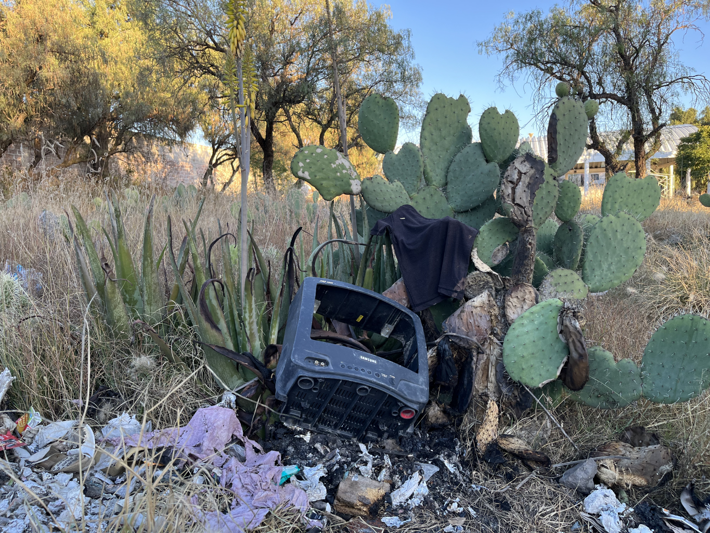

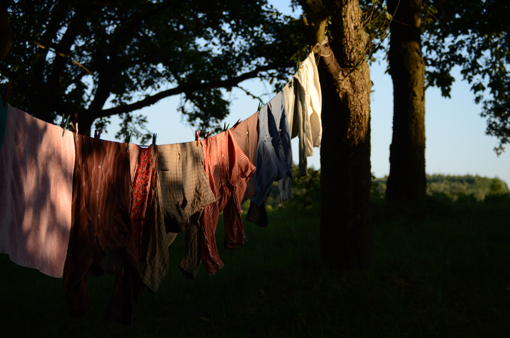
The toolkit:
The company needed a brief and relevant intro for their video marketing efforts.(Blender)
Here is a video I animated, added effects and audio for to promote an app for a project. Game play shown is from apps website during free play. (Blender, Soundly, Photoshop)
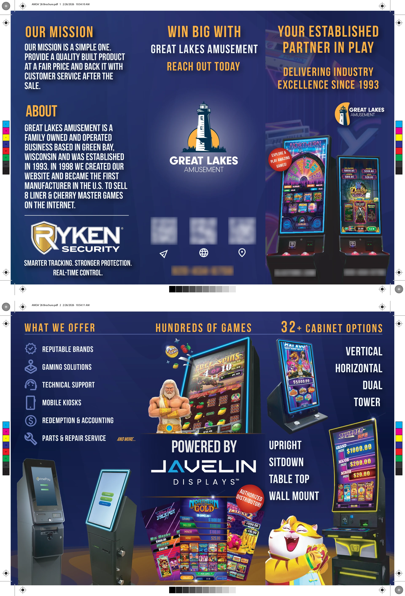
The company wanted a trifold brochure to promote their services, partnerships and recent product selection. Game screenshots, characters and company logos were provided assets or were assets taken from in-game. (Photoshop & Illustrator)
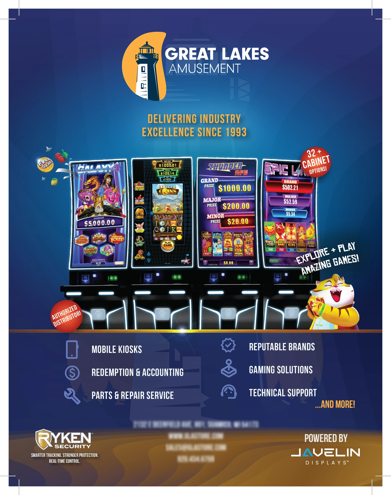
A promotional ad I made for an upcoming event the company was present at. The ad was published in the pre-event magazine. Game screenshots, characters and company logos were provided assets or were assets taken from in-game. (Photoshop & Illustrator)
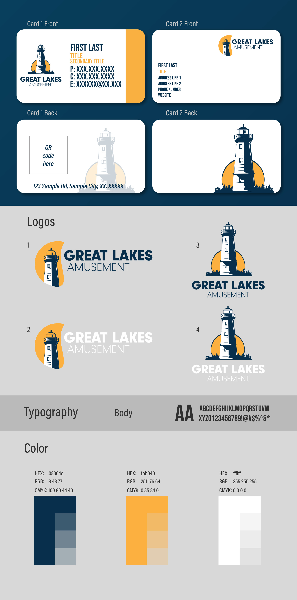
Some business cards I worked on and presented. (Illustrator)

My simple brand sheet. (Illustrator)
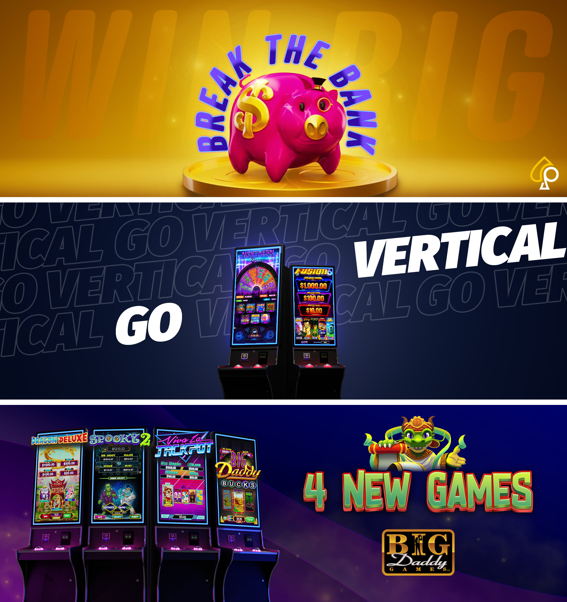
Promotional banners I made for web applications to promote a new products. Game screens, dragon character, and manufacturer logo sourced from in-game and manufacturer website. Pig character, its coin podium and manufacturer logo were taken from in game. (Photoshop / Blender)
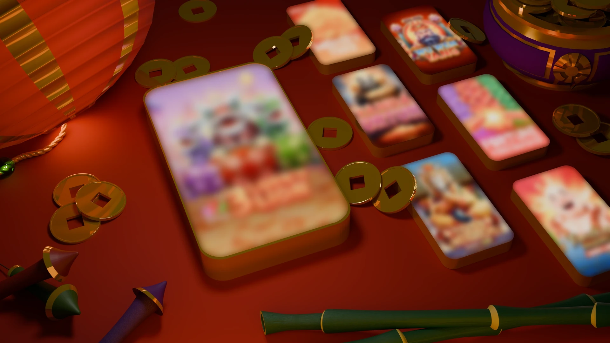
A multi-game ad I made for web and social media use. All assets other than screen shots were modeled by me.(Blender)
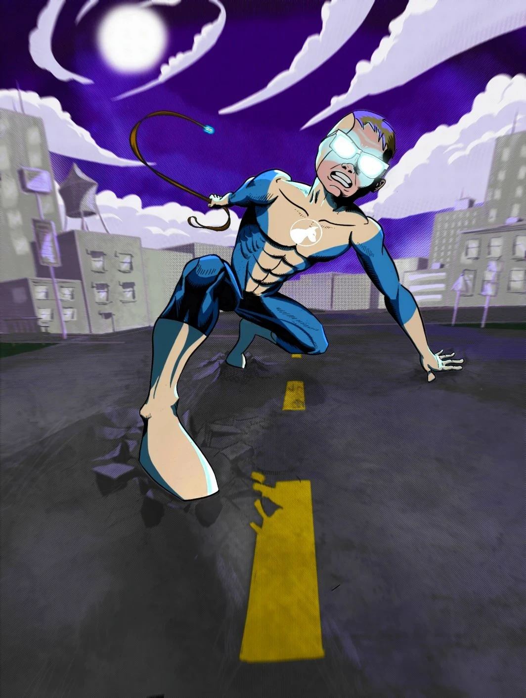
My son loves doing superhero poses around the house. This is inspired by a pose he did and his dog pajamas. (Procreate)
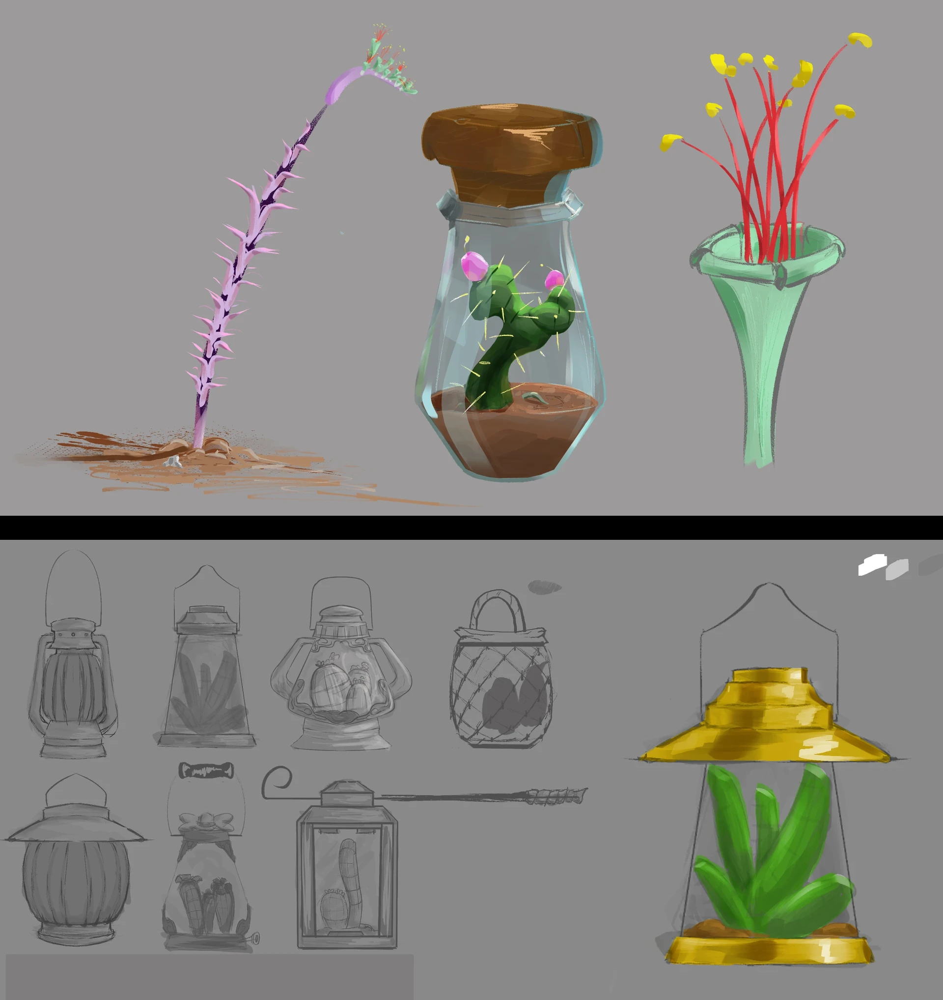
Cactus study / prop concepts for a world-building project of mine. (Clip Studio Paint)
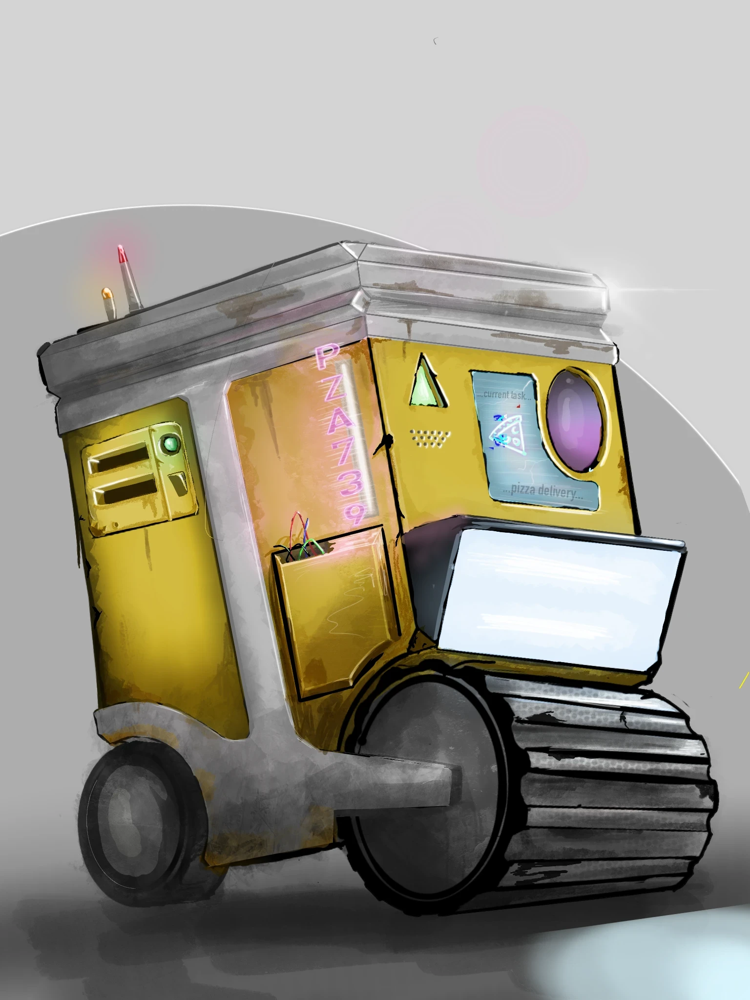
I wanted to create a robitic crate of some kind and devoloped this pizza bot idea. Pizza Delivery of the future.(Procreate)
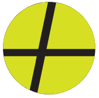